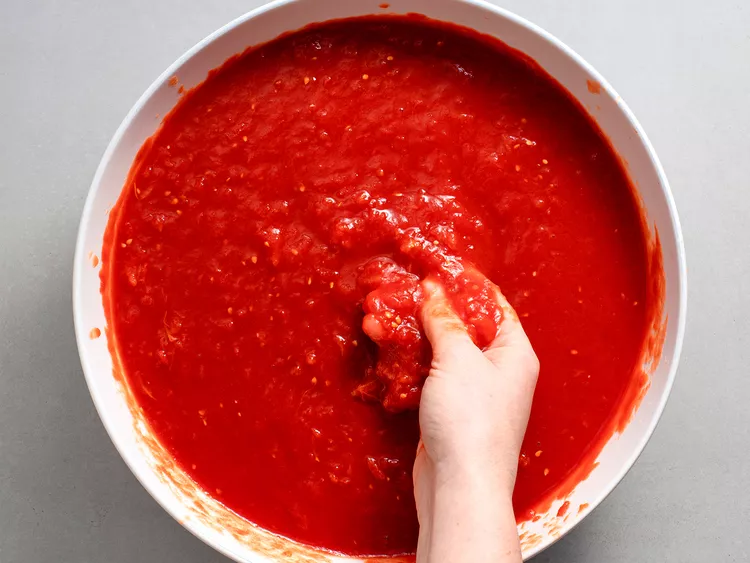
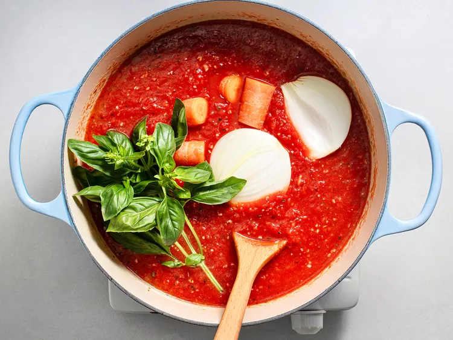
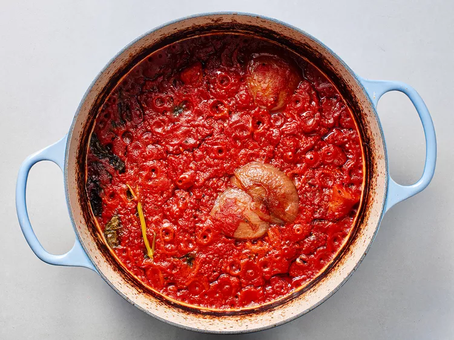
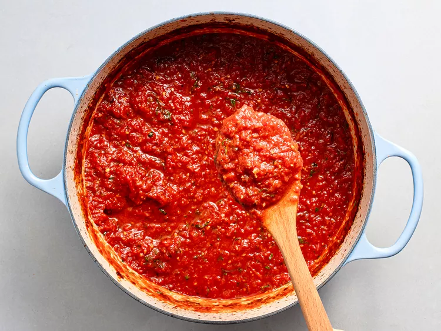

INGREDIENTS
- 4(28-ounce) cans whole peeled tomatoes, preferably imported D.O.P San Marzano Tomatoes
- 1.4 cup extra-virgin olive oil
- 4 tbsp butter
- 8 cloves garlic, minced
- 1 tsp red pepper flakes
- 1 tbsp dried oregano
- 1 medium carrot cut into large chunks
- 1 medium onion cut into half
- 1 large stem fresh basil
- Kosher salt and freshly ground black pepper
- 1 tbsp fish sauce, can be Red Boat
- 1/2 cup minced fresh parsely or basil leaves
DIRECTIONS
- Adjust over rack to lower position and preheat to 300 F. Place tomatoes in large bowl(dutch oven) then
crush and squeeze into about 1/2-inch chunks. Transfer 3 cups of crushed tomatoes into sealed
container and refrigerate until step 4.

- Heat olive oil and butter over medium heat until melted. Add garlic and stir for 2 two minutes
until fragrant and soft but not browned. Add red pepper flakes, oregano and stir for 1 minute until fragrant.
Add tomatoes, carrot, onion, and basil then stir to combine. Season lightly with salt and pepper.
Bring to simmer over high heat.

- Cover bowl with lid slight ajar and place into oven. Stir every 1-2 hours until the sauce is reduced
about half and darkened to deep red around 5~6 hours. Reduce oven heat to 275 F if browning is burning.

- Remove from oven. Using tongs remove onion, carrot and basil stems. Add refrigetated sauce and
stir to combine. (Optional) Add fish sauce (Optional). Season with salt and pepper and stir in
minced herbs with additional olive oil.

- Sauce can be refrigetated to a week or frozen to 6 months. To reheat, low heat and stir with 1/2 cup
water to melt in together.